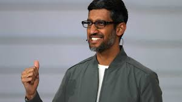

Sundar Pichai

Born: 10 June 1972 (age 51 years), Madurai
Education: Wharton School of the University of Pennsylvania (2000–2002), MORE
Spouse: Anjali Pichai
Children: Kavya Pichai, Kiran Pichai
Parents: Regunatha Pichai, Lakshmi Pichai
Nationality: American, Indian
Srinivasan Pichai
Google is Alphabet's largest subsidiary and is a holding company for Alphabet's internet properties and interests.
Sundar Pichai was appointed CEO of Google on October 24, 2015,
replacing Larry Page,
who became the CEO of Alphabet.
On December 3, 2019, Pichai also became the CEO of Alphabet.
Pichai Sundararajan, better known as Sundar Pichai, is an Indian-born American business executive.
He is the chief executive officer of Alphabet Inc. and its subsidiary Google.
Pichai began his career as a materials engineer
Awards and recognition
In 2022, Pichai received the Padma Bhushan in the category of Trade and Industry[53] from the Government of India,
the country's third-highest civilian award.[54][55]